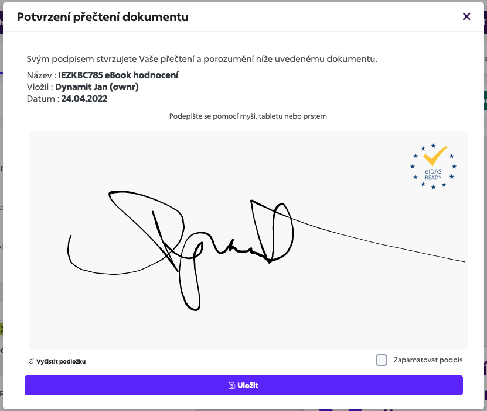

Čo je elektronický podpis?
Elektronický podpis je digitálny ekvivalent vlastnoručného podpisu. Používa sa na overenie identity odosielateľa elektronického dokumentu a zabezpečenie integrity obsahu.

Bezpečný spôsob digitálnej identifikácie
Elektronický podpis je digitálny ekvivalent vlastnoručného podpisu. Používa sa na overenie identity odosielateľa elektronického dokumentu a zabezpečenie integrity obsahu.
Ako získať zaručený elektronický podpis?
Online kvalifikovaný elektronický podpis
Ako aktivovať elektronický podpis?
Certifikát na občiansky preukaz pre elektronický podpis
